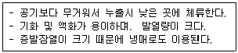

가스기능사 (2008-02-03 기출문제)
1과목: 가스안전관리
1. 다음 가스의 용기보관실 중 그 가스가 누출된 때에 체류하지 않도록 통풍구를 갖추고, 통풍이 잘되지 않는 곳에는 강제통풍시설을 설치하여야 하는 곳은?
- 질소 저장소
- 탄산가스 저장소
- 헬륨 저장소
- 부탄 저장소
(정답률: 91%)

2. 고압가스 특정제조 시설에서 배관을 해저에 설치하는 경우의 기준 중 옳지 않은 것은?
- 배관은 해저면 밑에 매설할 것
- 배관은 원칙적으로 다른 배관과 교차하지 아니할 것
- 배관은 원칙적으로 다른 배관과 수평거리로 20m 이상을 유지할 것
- 배관의 입상부에는 보호시설물을 설치할 것
(정답률: 83%)
3. 액화 염소가스의 1일 처리능력이 38,000kg일 때 수용정원이 350명인 공연장과의 안전거리는 얼마를 유지해야 하는가?
- 17m
- 21m
- 24m
- 27m
(정답률: 45%)
4. 액화석유가스의 안전관리 시 필요한 안전관리책임자가 해임 또는 퇴직하였을 때에는 그 날로부터 며칠 이내에 다른 안전관리자책임자를 선임하여야 하는가?
- 10일
- 15일
- 20일
- 30일
(정답률: 78%)
5. 다음 중 가연성이면서 독성인 가스는?
- 프로판
- 불소
- 염소
- 암모니아
(정답률: 75%)
6. 공업용 질소 용기의 문자 색상은?
- 백색
- 적색
- 흑색
- 녹색
(정답률: 49%)
7. 가스 누출검지 경보장치의 설치기준 중 틀리는 것은?
- 통풍이 잘되는 곳에 설치할 것
- 가스의 누설을 신속하게 검지하고 경보 경보하기에 충분한 수 일 것
- 그 기능은 가스 종류에 적절한 것일 것
- 체류할 우려가 있는 장소에 적절하게 설치할 것
(정답률: 84%)
8. 용기의 재검사 주기에 대한 기준 중 옳지 않는 것은?
- 용접용기로서 신규검사 후 15년 이상 20년 미만인 용기는 2년마다 재검사
- 500ℓ 이상 이음매 없는 용기는 5년마다 재검사
- 저장탱크가 없는 곳에 설치한 기화기는 2년 마다 재검사
- 압력용기는 4년마다 재검사
(정답률: 52%)
9. 다음 중 독성이 가장 큰 것은?(오류 신고가 접수된 문제입니다. 반드시 정답과 해설을 확인하시기 바랍니다.)(관련 규정 개정전 문제로 여기서는 기존 정답인 2번을 누르면 정답 처리됩니다. 자세한 내용은 해설을 참고하세요.)
- 염소
- 불소
- 시안화수소
- 암모니아
(정답률: 66%)
10. 일반 도시가스 사업자 정압기의 분해점검 실시 주기는?
- 3개월에 1회 이상
- 6개월에 1회 이상
- 1년에 1회 이상
- 2년에 1회 이상
(정답률: 69%)
11. 고압가스의 충전용기는 항상 몇 ℃ 이하의 온도를 유지하여야 하는가?
- 15
- 20
- 30
- 40
(정답률: 90%)
12. 다음 가연성 중 위험성이 가장 큰 것은?
- 수소
- 프로판
- 산화에틸렌
- 아세틸렌
(정답률: 57%)
13. 액화석유가스 충전시설에서 방류둑이 내측과 그 외면으로부터 몇 m 이내에는 저장탱크 부석설비 외의 것을 설치하지 않아야 하는가?
- 5
- 7
- 10
- 15
(정답률: 59%)
14. 다음 중 2중배관으로 하지 않아도 되는 가스는?
- 일산화탄소
- 시안화수소
- 염소
- 포스겐
(정답률: 75%)
15. 가스를 사용하려 하는데 밸브에 얼음이 얼어붙었다. 이 때 조치방법으로 가장 적절한 것은?
- 40℃ 이하의 더운물을 사용하여 녹인다.
- 80℃의 램프로 가열하여 녹인다.
- 100℃의 뜨거운 물을 사용하여 녹인다.
- 가스토치로 가열하여 녹인다.
(정답률: 91%)
16. 다음 중 허용농도 1ppb에 해당하는 것은?
- 1/103
- 1/106
- 1/109
- 1/1010
(정답률: 51%)
17. 내화구조의 가연성가스의 저장탱크 상호간의 거리가 1m 또는 두 저장탱크의 최대지름을 합산한 길이의 1/4길이 중 큰 쪽의 거리를 유지하지 못한 경우 물분무장치의 수량기준으로 옳은 것은?
- 4ℓ/m2·min
- 5ℓ/m2·min
- 6.5ℓ/m2·min
- 8ℓ/m2·min
(정답률: 50%)
18. LPG 사용시설의 기준에 대한 설명 중 틀린 것은?
- 연소기 사용압력이 3.3KPa를 초과하는 배관에는 배관용 밸브를 설치할 수 있다.
- 배관이 분기되는 경우에는 주배관에 배관용 밸브를 설치한다.
- 배관의 관경이 33mm 이상의 것은 3m마다 고정 장치를 한다.
- 배관의 이음부(용접이음 제외)와 전기 접속기와는 15cm 이상의 거리를 유지한다.
(정답률: 66%)
19. 방류둑에는 계단, 사다리 또는 토사를 높이 쌓아올림 등에 의한 출입구를 둘레 몇 m 마다 1개 이상을 두어야 하는가?
- 30
- 40
- 50
- 60
(정답률: 74%)
20. 산화에틸렌 충전용기에는 질소 또는 탄산가스를 충전하는데 그 내부가스 압력의 기준으로 옳은 것은?
- 상온에서 0.2MPa 이상
- 35℃에서 0.2MPa 이상
- 40℃에서 0.4MPa 이상
- 45℃에서 0.4MPa 이상
(정답률: 50%)
21. 후부 취출식 탱크에서 탱크 주밸브 및 긴급차단장치에 속하는 밸브와 차량의 뒷범퍼와의 수평거리는 얼마 이상 떨어져 있어야 하는가?
- 20cm
- 30cm
- 40cm
- 60cm
(정답률: 47%)
22. 가연성 물질을 공기로 연소시키는 경우에 공기 중의 산소농도를 높게 하면 연소속도와 발화온도는 어떻게 변하는가?
- 연소속도는 빠르게 되고, 발화온도도 높아진다.
- 연소속도는 빠르게 되고, 발화온도는 낮아진다.
- 연소속도는 느리게 되고, 발화온도는 높아진다.
- 연소속도는 느리게 되고, 발화온도도 낮아진다.
(정답률: 85%)
23. 고압가스일반제조의 시설기준에 대한 내용 중 틀린 것은?
- 가연성가스제조시설의 고압가스설비는 다른 가연성가스 고압설비와 2m 이상 거리를 유지한다.
- 가연성가스 설비 및 저장설비는 화기와 8m 이상의 우회거리를 유지한다.
- 사업소에는 경계표지와 경계책을 설치한다.
- 독성가스가 누출될 수 있는 장소에는 위험표지를 설치한다.
(정답률: 61%)
24. 도시가스사용시설에서 가스계량기는 절연조치를 하지 아니한 전선과는 몇 cm 이상의 거리를 유지하여야 하는가?
- 5
- 15
- 30
- 150
(정답률: 66%)
25. 다음 각 독성가스 누출 시 제독제로서 적합하지 않는 것은?
- 염소 : 탄산소다수용액
- 포스겐 : 소석회
- 산화에틸렌 : 소석회
- 황화수소 : 가성소다수용액
(정답률: 69%)
26. C2H2 제조설비에서 제조된 C2H2를 충전용기에 충전 시 위험한 경우는?
- 아세틸렌이 접촉되는 설비부분에 동함량 72%의 동합금을 사용하였다.
- 충전중의 압력을 2.5MPa 이하로 하였다.
- 충전 후에 압력이 15℃에서 1.5MPa 이하로 될 때까지 정치하였다.
- 충전용 지관은 탄소함유량이 0.1% 이하의 강을 사용하였다.
(정답률: 76%)
27. 다음 중 1종 보호시설이 아닌 것은?
- 가설건축물이 아닌 사람을 수용하는 건축물로서 사실상 독립된 부분의 연면적이 1500m2인 건축물
- 문화재보호법에 의하여 지정문화재로 지정된 건축물
- 교회의 시설로서 수용능력이 200인(人)인 건축물
- 어린이집 및 어린이놀이터
(정답률: 60%)
28. 지하에 매설된 도시가스 배관의 전기방식 기준으로 틀린 것은?
- 전기방식전류가 흐르는 상태에서 토양 중에 있는 배관 등의 방식 전위 상한 값은 포화황산동 기준전극으로 -0.85V 이하일 것
- 전기방식전류가 흐르는 상태에서 자연전위와의 전위변화가 최소한 -300mV 이하일 것
- 배관에 대한 전위측정은 가능한 배관 가까운 위치에서 실시할 것
- 전기방식시설의 관대지 전위 등을 2년에 1회 이상 점검할 것
(정답률: 71%)
29. 고압가스 일반제조시설에서 저장탱크 및 가스홀더는 몇 m3 이상의 가스를 저장하는 것에 가스방출장치를 설치하여야 하는가?
- 5
- 10
- 15
- 20
(정답률: 46%)
30. 습식아세틸렌발생기의 표면온도는 몇 ℃ 이하로 유지하여야 하는가?
- 30
- 40
- 60
- 70
(정답률: 47%)
2과목: 가스장치 및 기기
31. 고온배관용 탄소강관의 규격 기호는?
- SPPH
- SPHT
- SPLT
- SPPW
(정답률: 63%)
32. 땅속의 애노드에 강제 전압을 가하여 피방식 금속제를 캐소드로 하는 전기방식법은?
- 희생양극법
- 외부전원법
- 선택배류법
- 강제배류법
(정답률: 62%)
33. 기화기, 혼합기(믹서)에 의해서 기화한 부탄에 공기를 혼합하여 만들어지며, 부탄을 다량 소비하는 경우에 적절한 공급방식은?
- 생가스 공급방식
- 공기혼합 공급방식
- 자연기화 공급방식
- 변성가스 공급방식
(정답률: 74%)
34. 아세틸렌 용기의 안전밸브 형식으로 가장 많이 사용되는 것은?
- 가용전식
- 파열판식
- 스프링식
- 중추식
(정답률: 61%)
35. 시간당 200톤의 물을 20cm의 내경을 갖는 PVC파이프로 수송하였다. 관내의 평균유속은 약 몇 m/s인가?
- 0.9
- 1.2
- 1.8
- 3.6
(정답률: 48%)
36. 가스관(강관)의 특징으로 틀린 것은?
- 구리관보다 강도가 높고 충격에 강하다.
- 관의 치수가 큰 경우 구리관보다 비경제적이다.
- 관의 접합 작업이 용이하다.
- 연관이나 주철관에 비해 가볍다.
(정답률: 63%)
37. 압축된 가스를 단열 팽창시키면 온도가 강하하는 것은 어떤 효과에 해당되는가?
- 단열효과
- 줄-톰슨효과
- 서징효과
- 블로워효과
(정답률: 78%)
38. 수소나 헬륨을 냉매로 사용한 냉동방식으로 실린더 중에 피스톤과 보조 피스톤으로 구성되어 있는 액화 사이클은?
- 클라우드 공기액화사이클
- 린데 공기액화사이클
- 필립스 공기액화사이클
- 캐피자 공기액화사이클
(정답률: 63%)
39. 원통형의 관을 흐르는 물의 중심부의 유속을 피토관으로 측정하였더니 정압과 동압의 차가 수주 10m이었다. 이때 중심부의 유속은 약 몇 m/s 인가?
- 10
- 14
- 20
- 26
(정답률: 64%)
40. 브로돈관 압력계 사용 시의 주의사항으로 옳지 않은 것은?
- 사전에 지시의 정확성을 확인하여 둘 것
- 안전장치가 부착된 안전한 것을 사용할 것
- 온도나 진동, 충격 등의 변화가 적은 장소에서 사용 할 것
- 압력계의 가스를 유입하거나 빼낼 때는 신속히 조작 할 것
(정답률: 85%)
41. 펌프의 회전수를 1,000rpm에서 1,200rpm으로 변화시키면 동력은 약 몇 배가 되는가?
- 1.3
- 1.5
- 1.7
- 2.0
(정답률: 57%)
42. 수소(H2)가스 분석방법으로 가장 적당한 것은?
- 팔라듐관 연소법
- 헴펠법
- 황산바륨 침전법
- 흡광 광도법
(정답률: 58%)
43. 다음 보온재 중 안전사용 온도가 가장 높은 것은?
- 글라스 화이버
- 플라스틱 폼
- 규산칼슘
- 세라믹 화이버
(정답률: 66%)
44. 다음 중 공기 액화분리장치의 주요 구성요소가 아닌 것은?
- 공기압축기
- 팽창밸브
- 열교환기
- 수취기
(정답률: 71%)
45. LPG 용기의 사용되는 조정기의 기능으로 가장 옳은 것은?
- 가스의 유량 조정
- 가스의 유출압력 조정
- 가스의 밀도 조정
- 가스의 유속 조정
(정답률: 61%)
3과목: 가스일반
46. 다음 중 공기보다 가벼운 가스는?
- O2
- SO2
- H2
- CO2
(정답률: 75%)
47. 염소에 대한 설명 중 틀린 것은?
- 상온, 상압에서 황록색의 기체로 조연성이 있다.
- 강한 자극성의 취기가 있는 독성기체이다.
- 수소와 염소의 등량 혼합기체를 염소폭명기라 한다.
- 건조 상태의 상온에서 강재에 대하여 부식성을 갖는다.
(정답률: 65%)
48. 다음 비열에 대한 설명 중 틀린 것은?
- 단위는 kcal/kg·℃이다.
- 비열이 크면 열용량도 크다.
- 비열이 크면 온도가 빨리 상승한다.
- 구리(銅)는 물보다 비열이 작다.
(정답률: 52%)
49. 프로판가스 60mol%, 부탄가스 40mol%의 혼합가스 1mol을 완전연소 시키기 위하여 필요한 이론 공기량은 약 몇 mol인가? (단, 공기 중 산소는 21mol%이다.)
- 17.7
- 20.7
- 23.7
- 26.7
(정답률: 20%)
50. 황화수소에 대한 설명 중 옳지 않은 것은?
- 건조된 상태에서 수은, 동과 같은 금속과 반응한다.
- 무색의 특유한 계란 썩는 냄새가 나는 기체이다.
- 고농도를 다량으로 흡입할 경우에는 인체의 치명적이다.
- 농질산, 발열질산 등의 산화제와 심하게 반응한다.
(정답률: 61%)
51. 열역학적 계(system)가 주위와의 열교환을 하지 않고 진행되는 과정을 무슨 과정이라고 하는가?
- 단열과정
- 등온과정
- 등압과정
- 등적과정
(정답률: 62%)
52. 메탄 95% 및 에탄 5%로 구성된 천연가스 1m3의 진발열량은 약 몇 kcal인가? (단, 표준상태에서 메탄의 진발열량은 8,124cal/ℓ, 에탄은14,602cal/ℓ이다.)
- 8151
- 8242
- 8353
- 8448
(정답률: 37%)
53. 다음 중 주로 부가(첨가)반응을 하는 가스는?
- CH4
- C2H2
- C3H8
- C4H10
(정답률: 56%)
54. 다음 중 무색 · 투명한 액체로 특유의 복숭아향과 같은 취기를 가진 독성가스는?
- 포스겐
- 일산화탄소
- 시안화수소
- 산화에틸렌
(정답률: 83%)
55. 다음 중 표준상태에서 비점이 가장 높은 것은?
- 나프타
- 프로판
- 에탄
- 부탄
(정답률: 49%)
56. 다음 LNG와 SNG에 대한 설명으로 옳은 것은?
- 액체 상태의 나프타를 LNG라 한다.
- SNG는 대체 천연가스 또는 합성 천연가스를 말한다.
- LNG는 액화석유가스를 말한다.
- SNG는 각종 도시가스의 총칭이다.
(정답률: 68%)
57. 기체의 체적이 커지면 밀도는?
- 작아진다.
- 커진다.
- 일정 하다.
- 체적과 밀도는 무관하다.
(정답률: 71%)
58. 일반적으로 기체에 있어서 정압비열과 정적비열과의 관계는?
- 정적 비열 = 정압 비열
- 정적 비열 = 2×정압 비열
- 정적 비열 > 정압 비열
- 정적 비열 < 정압 비열
(정답률: 50%)
59. 다음 중 표준대기압에 해당되지 않는 것은?
- 760mmHg
- 14.7PSI
- 0.101MPa
- 1013bar
(정답률: 52%)
60. 다음 보기와 같은 성질을 갖는 것은?

- O2
- CO
- LPG
- C2H4
(정답률: 75%)